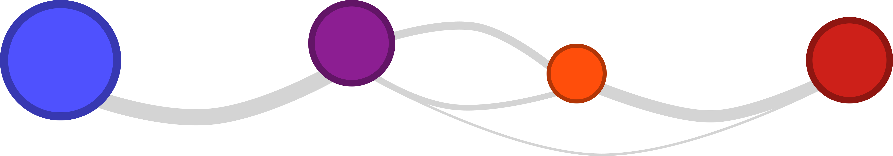
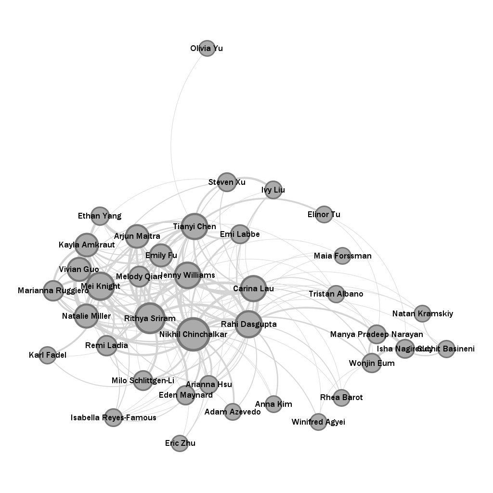
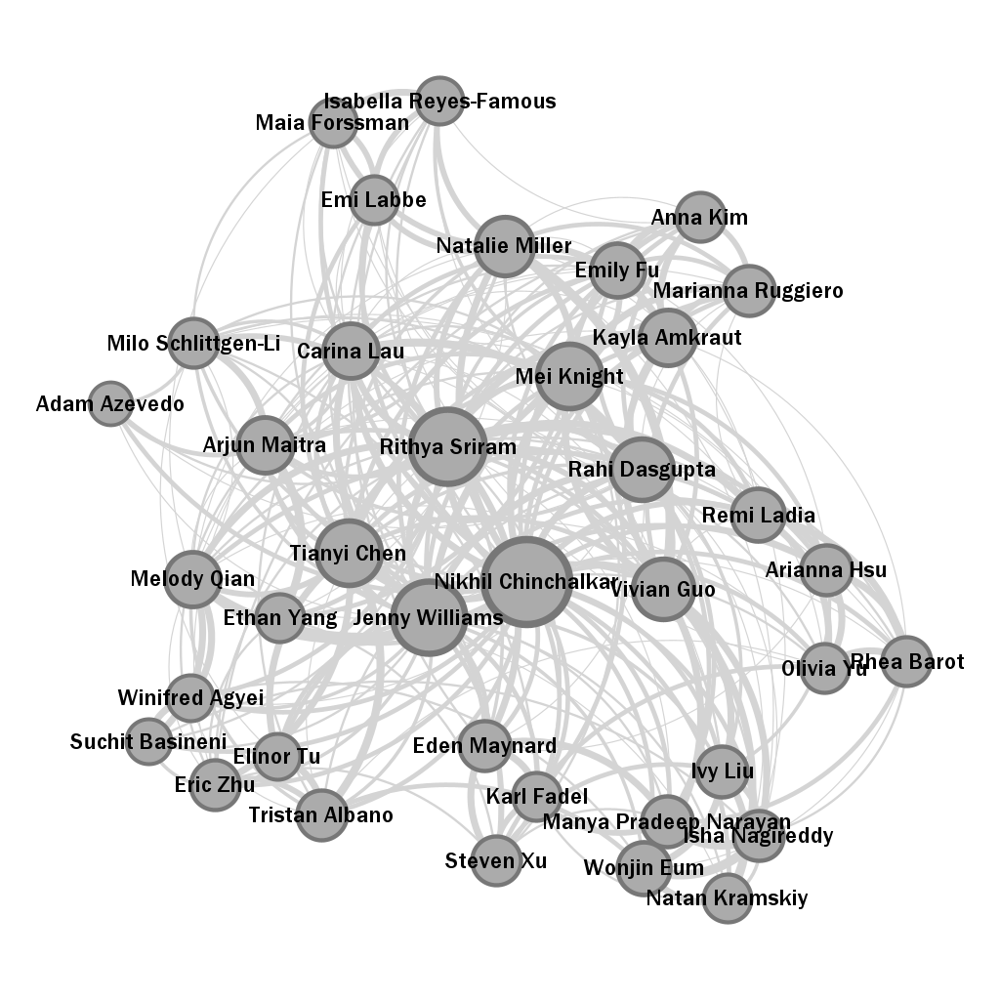
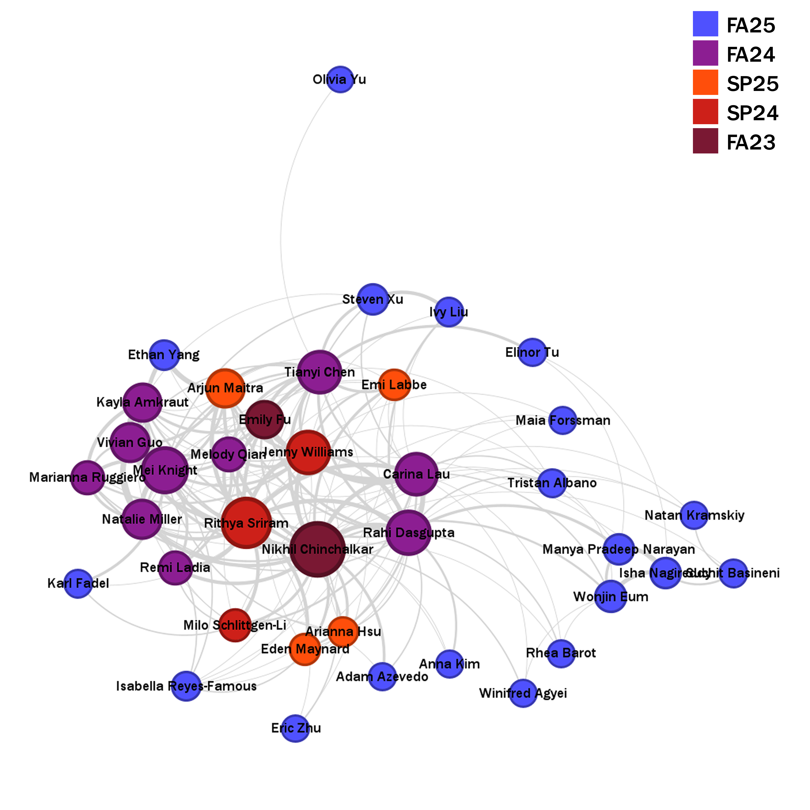
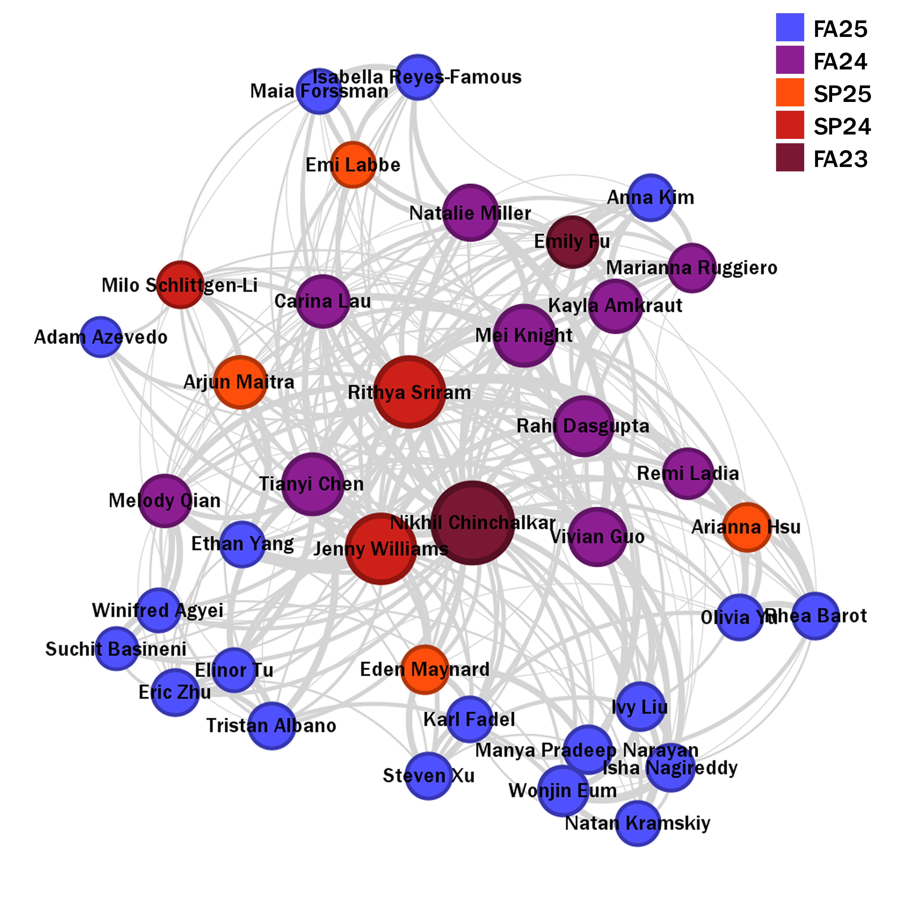
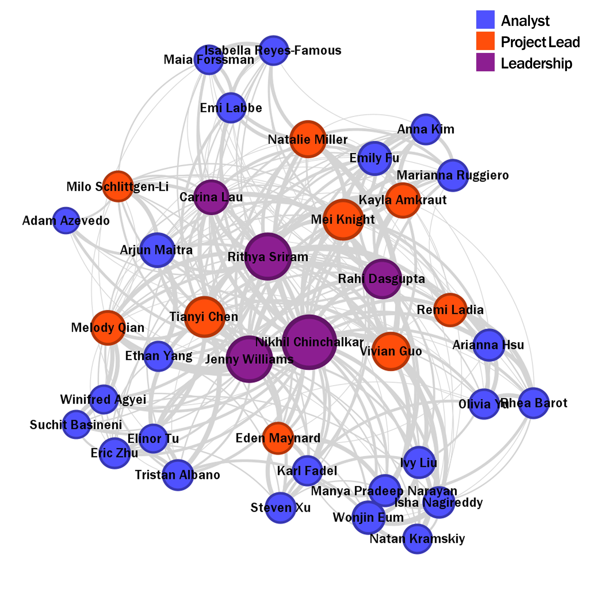
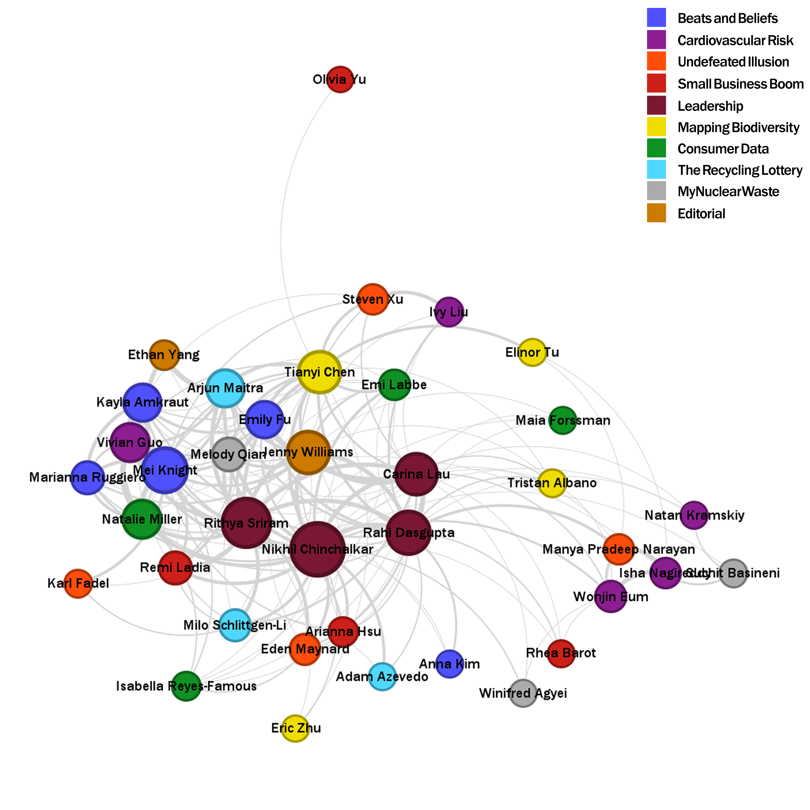
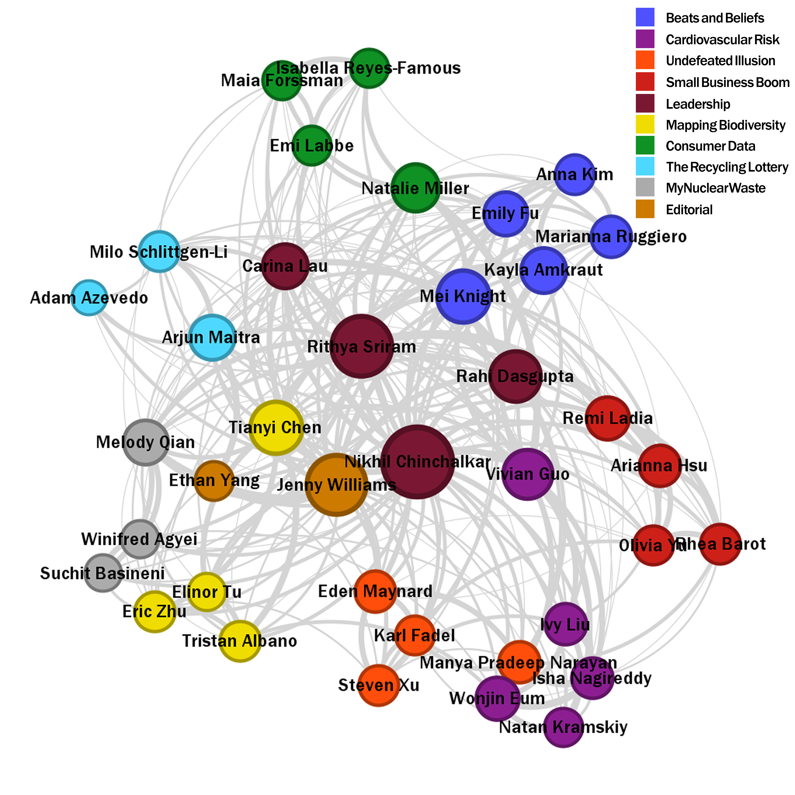

No Generative AI was used in the making of this project.
Dec. 25, 2025
Cornell Data Journal (CDJ) is a club consisting of around 40 people, whose goal is to provide students with the opportunity to publish journalistic stories about specific topics in small groups, using data as the main piece of evidence for their narrative. Beyond technical experience, as a social club, CDJ also attempts to provide students with an opportunity to develop relationships with other people, form communities of like-minded individuals, and grow as a person.
But just how well does CDJ accomplish that growth? To assess this, in the fall of 2025, I surveyed each CDJ member two different times: once at the beginning of the semester, during the very first general-body meeting where new members were introduced (in September), and once at the end of the semester (in December), to observe how their relationships varied across the three months they spent as a member of CDJ. Each survey consisted of a series of around 40 questions (one for each member of the club) that asked a responder to rate how well they knew a given person, using a Likert scale. For instance, a couple sample questions in the survey are as follows:
| I've never seen/heard of this person before | I recognize their face/name | I've spoken to them once before | I've spoken to them more than once before | I speak with them at least once a week | I speak with them everyday | I am this person | |
| Jenny Williams | |||||||
| Eden Maynard |
To convert the responses to something more quantitative, I converted each response to a weight value.
| Survey Value | Assigned Weight |
|---|---|
| I speak with them everyday | 4 |
| I speak with them at least once a week | 3 |
| I've spoken to them more than once before | 2 |
| I've spoken to them once before | 1 |
| I recognize their face/name | 0 |
| I've never seen/heard of this person before | 0 |
| I am this person | 0 |
Since all 38 members of CDJ filled out both forms, for a given relationship pair A - - B, there were two weights: one for A rating their relationship with B and another for B rating their relationship with A. To best accommodate for possible differences in relationship perspectives, I took the average of these pairs of weights to produce an undirected graph.
After all the data was collected, processed, and exported into a graph file, I extracted both network visualizations and metrics to evaluate the interconnectivity of the club.
Pre-semester Survey:

Post-semester Survey:

The uppermost image is the initial survey data, taken at the very first meeting, and on the bottom is the survey data from the very last meeting of the year. On top of providing some intuition for what the dataset looks like at either stage of the survey, the above visuals also aid in understanding how the club has grown. Each of the diagrams was constructed in Gephi, with edges representing connections between nodes (people), with the thickness representing the weight of the self-identified strength of the relationship. The nodes (representing club members) are sized according to the ranking of their weighted degrees, or the sum of the edge weights they are connected to. To space nodes informatively, I used the ForceAtlas2 algorithm, which forms communities based on the edge weight data.
Clearly, connections between club members have strengthened over time: edges are more common and more thick in the second survey’s data, and the spacing algorithm produced a much more tightly-knit graph. Beyond just visual differences, I analyzed certain metrics to better evaluate the CDJ’s social growth.
The first of these metrics, density, is the most widely used for evaluating a network’s connectivity. Density is the ratio of existing connections to all the possible connections in the network, so a perfectly connected network where everyone knows everyone would have a density of 1 and a perfectly disconnected network where nobody knows anybody would have a density of 0. At the beginning of the year, the density of CDJ was 0.256, meaning only around 26% of all possible connections were actually realized, but by the end of the year, this number grew to 0.405. In other words, by December, a randomly selected pair of club members have a 40.5% chance of having spoken at least once before, which is encouraging for a club of such large size. It should be noted that these numbers can only be compared with other numbers from CDJ itself: this sort of analysis has not been done for other Cornell clubs. So while the 0.15 point increase in density is certainly a good thing, it lacks a true ‘baseline’ for comparison.
Nonetheless, from both a leadership and outsider perspective, learning about how a large group that meets once or twice a week grows is certainly useful. Another metric to measure growth is the diameter of the network. Essentially, the diameter of the network measures the longest path between any two nodes within the network. So if the longest path between any nodes in the network was between nodes A and C, and that path was A - - B - - C, then the diameter of the network would be 2. At the beginning of the semester, the network diameter was 3, meaning that there were at most two degrees of separation between any pair of CDJ analysts, but this dropped to 2 after the semester was over. Essentially, for any pair of people in CDJ, there was only one other person required to ‘connect’ them. It should be noted that this metric calculation is only possible for groups that are connected, meaning there does not exist a node with no connections. Luckily, even at the beginning of the year, everyone in CDJ had spoken to at least one other person in CDJ, so this metric remains valid.
While both density and diameter are useful metrics, both ignore the weightage of edges, meaning that though they illustrate network connectivity, they lack the context of the strength of connections that exist in the network. To compensate for this, I consider the average weighted degree of each node in the graph. As briefly described above, this metric computes the sum of the weight of each edge connected to a particular node, then finds the average of that value across all the nodes. In September, this metric was 13.658 and increased to 26.237 come December. While the growth in average weighted degree is certainly a positive indicator of communal growth within the club, the numbers themselves are difficult to interpret without additional context.
Consider the average degree (without weighting) of each node in the graph, which is equivalent to the number of connections the average person has. Near the beginning of the semester, the average person had 9.474 connections, but this rose dramatically to 15 at the end of the year. Using both the average degree and the weighted average degree, I can recover the average weight of an edge which is just equal to the quotient $\frac{\mathrm{Avg. Weighted Degree}}{\mathrm{Avg. Degree}}$. Now, to start the academic year, the average weight of a connection was about 1.442, equivalent to speaking with someone a couple of times, but grew to 1.749 after the semester concluded, about equal to speaking with another person a few times. Though slight, not only did the number of connections increase over the course of the semester, so did the strength of these connections.
The above analysis is summarized in the below chart. Essentially, through every metric, the club showed growth in community formation.
| Pre-sem | Post-sem | |
|---|---|---|
| Density | 0.256 | 0.405 |
| Diameter | 3 | 2 |
| Avg. Weighted Degree | 13.658 | 26.237 |
| Avg. Degree | 9.474 | 15.000 |
| Avg. Edge Weight | 1.442 | 1.749 |
While I initially stated that metrics can better evaluate the general club data, that does not mean that visual analysis is futile. Consider the following visuals, which color nodes in both pre-semester and post-semester networks by certain demographic information.
Pre-semester Survey (Colored by Join Class):

Post-semester Survey (Colored by Join Class):

The above plots paint each node (person) by the semester that they joined CDJ. Clearly, at the start of the year, the members with the most connections (at the center of the network) were all students who had been in the club for at least one semester, while new members isolated on the outskirts. Since integration into the club is a key objective for new members, seeing them more closely grouped with the other members (with stronger connections) is an indicator of success. Still, it appears as if new members remain on the edges of the network, though there might be an alternative explanation for that:
Post-semester Survey (Colored by Role):

The above chart colors each node by their role, either Leadership, Project Lead, or Analyst. Leadership is the group of people that are elected into positions to organize the club from the highest level (communicating with project leads, presenting during meetings, etc.) and Project Leads manage a group of 3-4 Analysts working on a specific data science project. Hence, it makes intuitive sense to see Leadership grouped in the middle, with the most connections, followed by a ‘ring’ of Project Leads, accompanied by each of their Analysts. This semester, Leadership (including myself) elected to have the only Project Leads be returning members who had more experience within CDJ, to allow the smoothest experience possible to new students. Under that premise, having the new members on the outskirts of the graph is more a result of role type rather than a deliberate lack of interaction.
Sorting Analysts and Project Leads by their specific project team reveals some more intriguing information:
Pre-semester Survey (Colored by Project):

Post-semester Survey (Colored by Project):

The first survey (the higher of the two plots) was conducted before project teams were even pitched, let alone formed, so it is clear why there would be no correlation between a node’s location in the network and their project team at the beginning of the semester. However, as soon as the meeting ended, teams were created. Analysts and Project Leads met about every week (outside of ‘normal’ CDJ general-body meetings) to work on their projects. The bottom network illustrates the result of those frequent interactions, with each node nearly completely surrounded by their teammates. Such placement is both good and bad: on one hand, it is good that team members are continually communicating, but on the other, there perhaps should be more encouraged interaction outside of each project team to form a better overall community.
There are plenty of other statistics one could include to further analyze the network. One of which is using eigenvector centralities, which measure the strength of connections in terms of connections with well-connected others, to predict future Leadership positions. I was able to conduct that analysis for this semester, but found the results somewhat disappointingly noisy. Both pre-semester and post-semester surveys had people who did not consider applying for leadership positions with top eigenvector values and people who did win their Leadership positions with relatively low eigenvector values. Perhaps it is a sign of connections between people not being the end-all for “success” within this organization.
Regardless, it is fascinating to see how CDJ has grown over the course of the three months this set of members have spent together. For future years, I will use this information to attempt to form an even better community, even if it is true that connections are not the only thing that matters.